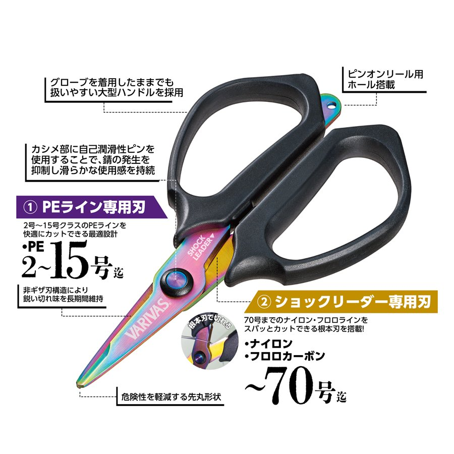
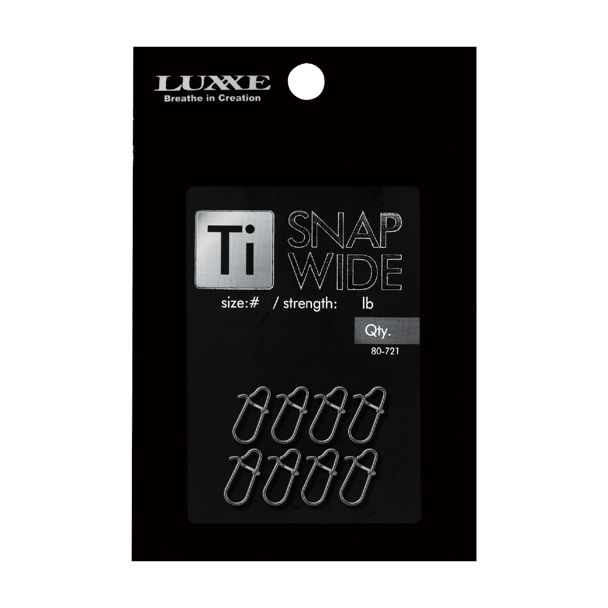
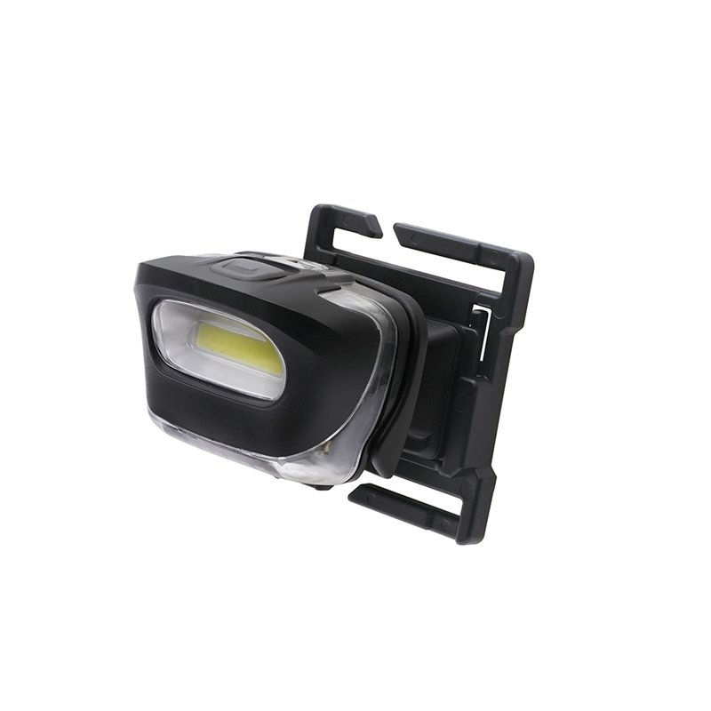

ピースパッ！シザース MAGNUM
（VAAC-83）
ピースパッ！シザース MAGNUMは、バリバスのPEライン用のハサミ（PEシザース）です。キャッチコピーは「瞬断、そして不変。夢を繋ぐための『断つ』力。」。
PE専用の刃とナイロン・フロロ専用の刃を分けた「素材別2Way構造」で、太いPEもショックリーダーも、鋭い切れ味のまま長く切り続けられるのが最大の特徴です。

画像出典:バリバス公式HP
スペック
- メーカー
- VARIVAS（バリバス）
- 品番
- VAAC-83
- 対応ライン
- PE 2〜15号／ナイロン・フロロカーボン 70号まで
- 素材
- 本体：高硬度刃物用ステンレス鋼（チタンコーティング）／ハンドル：耐UV樹脂
- カラー
- レインボー
- 価格
- 2,500円（メーカー希望小売価格）
- 発売
- 2026年6月
▼今すぐチェック

ピースパッ！シザース MAGNUMの特徴
1本の中で役割を分ける「素材別2Way構造」
-
PE用とモノフィラ用の刃を分けた2Way構造
PE用の刃は通常の位置に、ナイロン・フロロ用の刃はカシメ部をはさんだ根元側に独立して配置。刃の角度と噛み合わせを素材ごとに最適化して、硬いリーダーを切ってもPE用の刃が傷みにくい。
-
錆びにくく、長く切れる
本体は高硬度刃物用ステンレス鋼にチタンコーティング。刃は非ギザ刃で傷みにくく、カシメ部には自己潤滑性のあるオイルピンを使って、塩による固着を防ぐ。
-
グローブでも使える大型ハンドル
ハンドルを大きくして、厚手のグローブをしたままでも指が掛かりやすい。先端は丸い形で安全。ピンオンリールを付けられる穴もある。
ピースパッ！シザース MAGNUMの使い方
PEラインは先端側のPE専用刃で、ショックリーダーは根元側のモノフィラメント専用刃で切るのが基本の使い方です。刃を使い分けることで、PE用の刃の切れ味を長く保てます。
ノットを組んだ後の端糸の処理も、グローブをしたまま大型ハンドルでしっかり切れます。ピンオンリールでベストやバッグに付けておけば、必要な時にすぐ取り出せます。
ピースパッ！シザース MAGNUMがおすすめの人
マグロやヒラマサを狙うオフショア、青物のロックショアやショアジギング、ビッグベイトのバス・シーバスなど、2号以上のPEとショックリーダーでラインシステムを組む釣りに向いています。
PE15号・ナイロン70号まで、1本で切れ味を落とさずに切れるのが強み。大物がよく釣れる時合いに、ラインの処理で手間取らずに済みます。
ワンポイント
釣りが終わったら、真水で塩を流して水気をふき取り、刃を何度か開け閉めしてからしまうと、オイルピンの効果と合わせてカシメ部の固着を防げます。切れ味を長持ちさせたいなら、リーダーを必ず根元の刃で切るクセをつけましょう。
ここが使いやすい！ポイント
ピースパッ！シザース MAGNUMの使いやすいポイントを紹介します。
PE用とリーダー用の2段刃

先端側がPEライン2〜15号用、根元側がナイロン・フロロ70号までのショックリーダー用です。大型ハンドルとピンオンリール用の穴も付いています。
画像出典:バリバス公式HP
製品の詳しい解説は、バリバス公式HPのピックアップ記事にもあります。
▼今すぐチェック
ピースパッ！シザース MAGNUMとあわせてチェックしたいアイテム
-
 ツールボックス VAAC-85
バリバス
詳細はこちら＞
ツールボックス VAAC-85
バリバス
詳細はこちら＞
同じバリバスの小物入れ。ハサミやリーダーをまとめて収納。
-

ラグゼ Ti スナップワイド がまかつ 詳細はこちら＞チタンのスナップ。ラインシステムの先に。
-

VISOA UA32 槌屋ヤック 詳細はこちら＞ベストに付けられるLEDライト。夜の結束作業に。